EXTERIOR
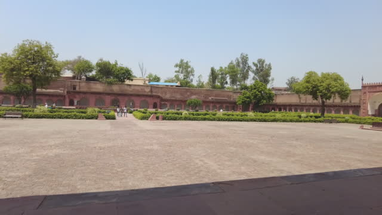
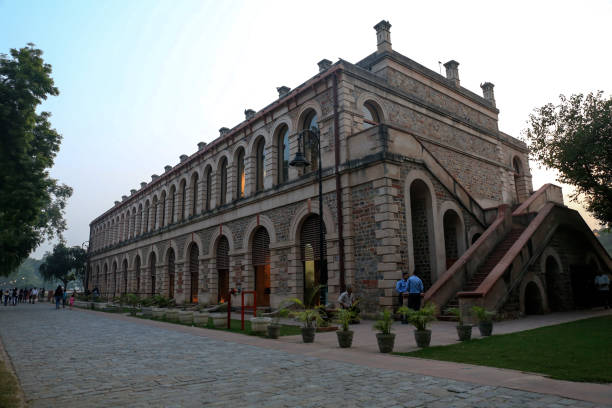
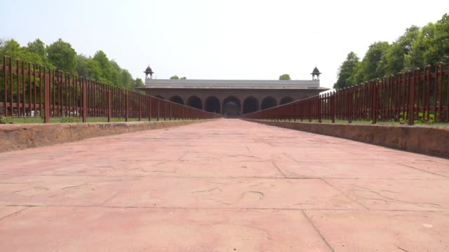
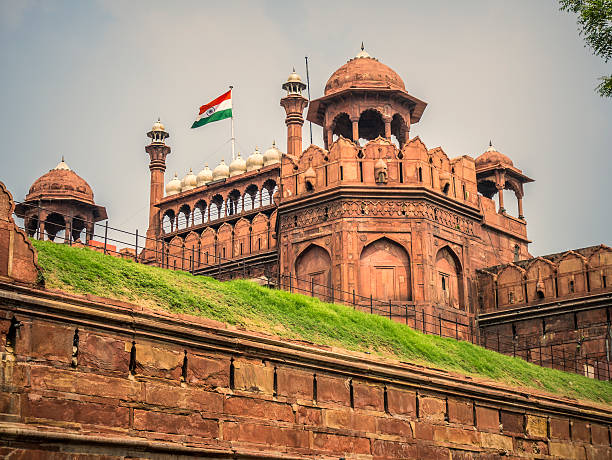
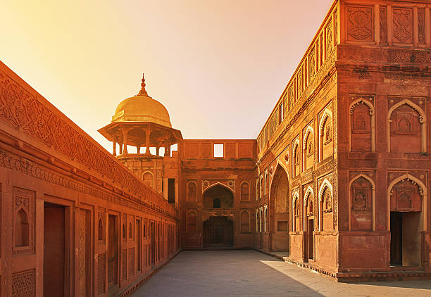
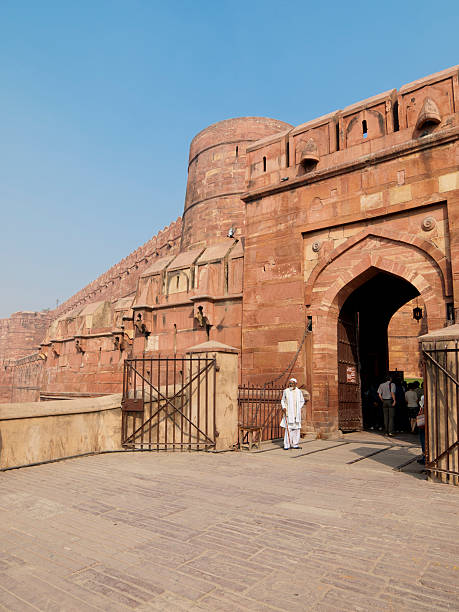
- MYTHS
- Inescapable Prison: There's a myth that the Red Fort housed a prison where countless prisoners were held captive, tortured, and executed. While the fort did have some areas designated for confinement, it was primarily a royal residence and administrative center rather than a large-scale prison.
- Treasure Vaults: Some myths suggest that the Red Fort contains hidden treasure vaults filled with gold, jewels, and other valuable artifacts. However, despite various searches and excavations, no significant treasures have been found within the fort's premises.
- Haunted Fort: Like many historical landmarks, there are myths about the Red Fort being haunted by the spirits of past rulers or prisoners. However, there's no substantial evidence to support these claims, and the fort is primarily a tourist attraction and cultural heritage site.
- Mystical Powers: There are myths about the Red Fort possessing mystical powers or divine protection, which shielded it from enemy invasions and natural disasters. However, the fort's defenses were primarily based on strategic military planning and architectural design rather than supernatural forces.
- Cursed Monument: Some myths suggest that the Red Fort is cursed due to the tragedies and misfortunes associated with its construction and history. However, there's no historical evidence to suggest such a curse, and the fort remains an iconic symbol of India's rich cultural heritage.
INTERIOR
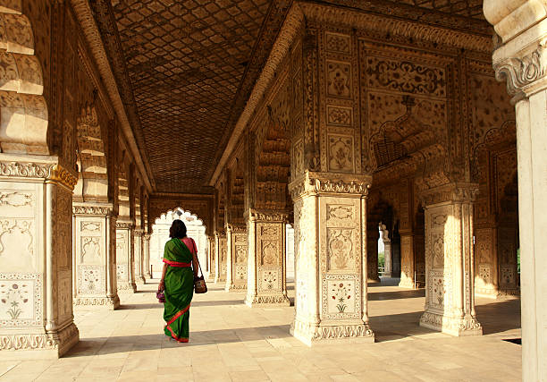
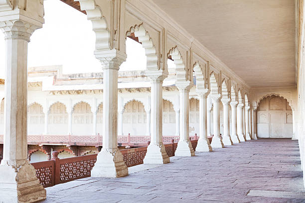
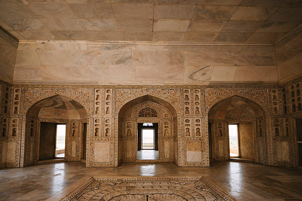
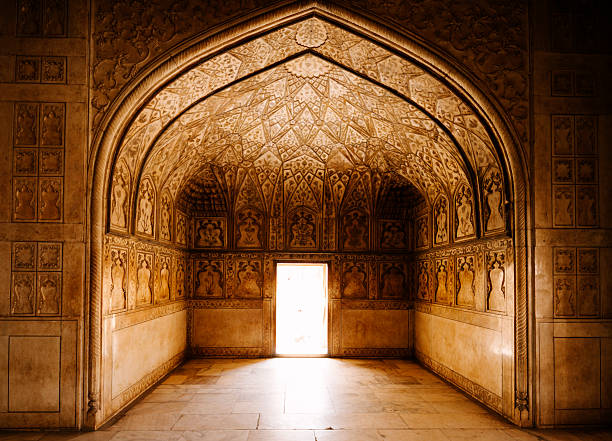
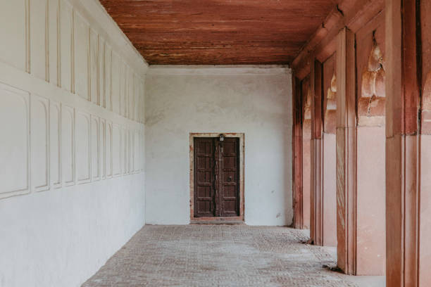
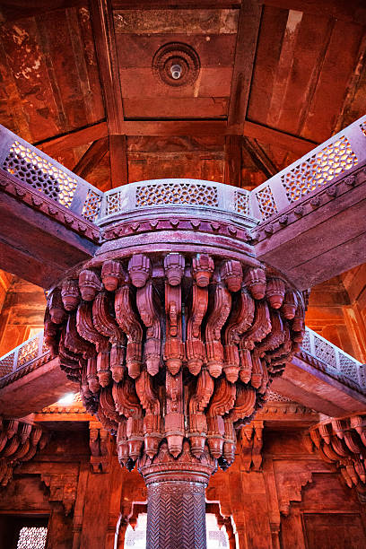
- FACTS
- Mughal Architectural Marvel: The Red Fort, also known as Lal Qila, is an architectural marvel built by the Mughal Emperor Shah Jahan in the 17th century. It showcases the grandeur and opulence of Mughal architecture, featuring intricate carvings, majestic domes, and ornate decorations.
- Historical Significance: The Red Fort served as the main residence of the Mughal emperors for nearly 200 years, from its completion in 1648 until the British colonial era. It witnessed significant historical events, including coronations, royal ceremonies, and the proclamation of independence.
- UNESCO World Heritage Site: In 2007, the Red Fort was designated as a UNESCO World Heritage Site, recognizing its cultural significance and architectural splendor. It attracts millions of visitors annually who come to admire its beauty and learn about India's rich history.
- Symbol of Indian Independence: The Red Fort holds special significance in Indian history as the site where Jawaharlal Nehru, India's first Prime Minister, hoisted the national flag and delivered the country's first Independence Day speech on August 15, 1947.
- Cultural Center: Today, the Red Fort serves as a cultural center and tourist destination, hosting various events, exhibitions, and cultural performances that showcase India's diverse heritage and vibrant traditions. It remains a proud symbol of India's rich cultural and architectural legacy.